New designs for approval
These are drafts (round 2: every stage now changes the body, posture, head and face, like a Pokemon evolution). The Kimurodex still shows the old art. Approve, ask for changes, or keep the old one, then press Export my decisions and paste the text to Claude. (Not in the menu and hidden from search engines, but anyone with the address can open it.)
Piglet / Briskhog / Ironhusk
חזיר-דרדס אפור-פצלי עם רעמת קוצי אבן ורודה (לא חום)


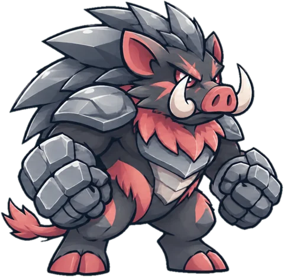

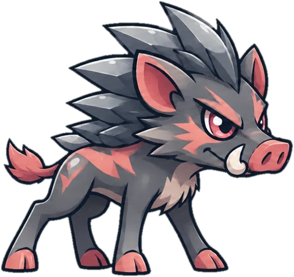
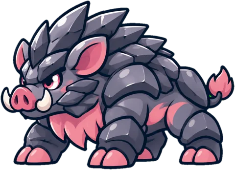
Woolusk / Mammoxen / Primammoth
ממותה בצבע חול-שמנת עם אבני טורקיז, פרווה שעירה


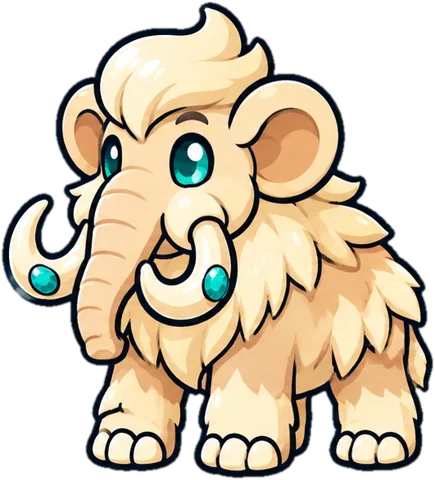

Tusknub / Bristusk / Terrausk
חזיר-בר מדברי ארוך-רגליים בצהוב חול עם סרטי בד
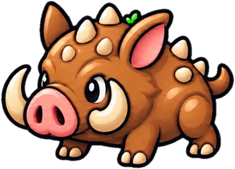


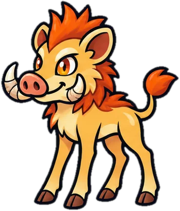


Terrunk / Terravant / Terramalith
פיל אפור-בהיר עם גבישי אזמרגד ואוזניים כמו מניפות גביש
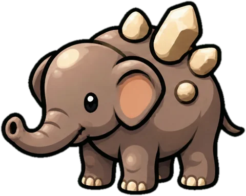
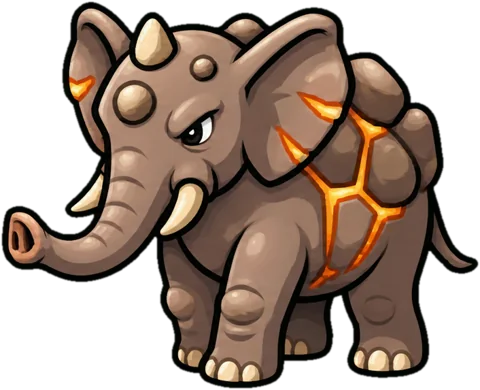
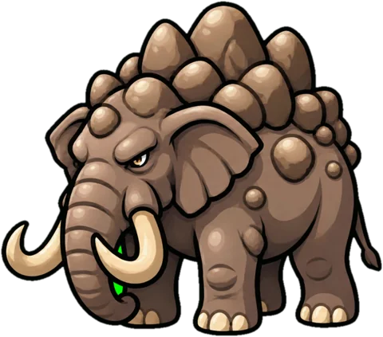

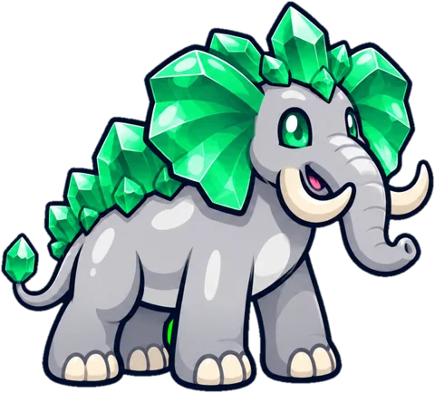
Pebblump / Boulderant / Titanusk
יצור דיונות מרובע ממושקף בשריון חול - ללא פיל


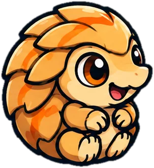

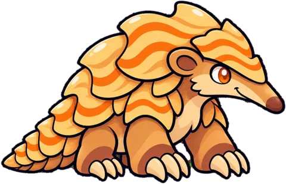
Hippusk / Tuskodon / Megatus
היפופוטם אמיתי כחלחל עם גבישי מכרה ופנס


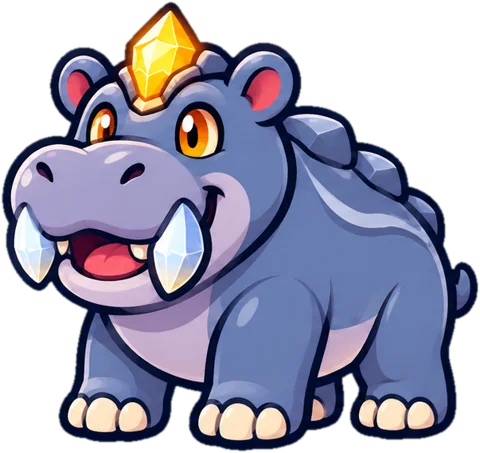
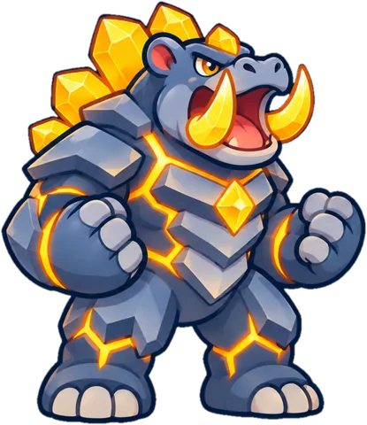
Rootlet / Tuskhide / Thornusk
חזיר עץ ירוק עשוי קליפה ושורשים עם פרחים

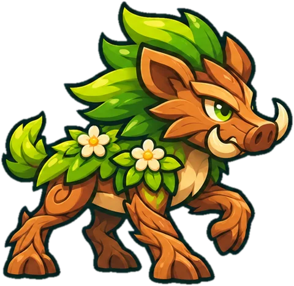

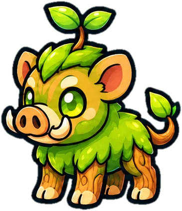

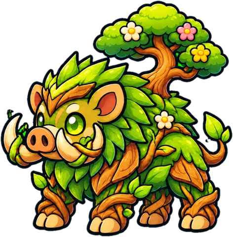
Snoutlet / Tuskhog / Ironboar
חזיר מלחמה מפלדה כחולה-כסופה עם קסדה


Magmoxling / Magmoxhorn / Magmoxvern
קרנף סלע סגול-אפור עם להבה כחולה-לבנה ושני קרניים


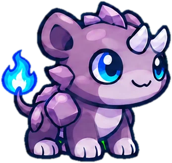

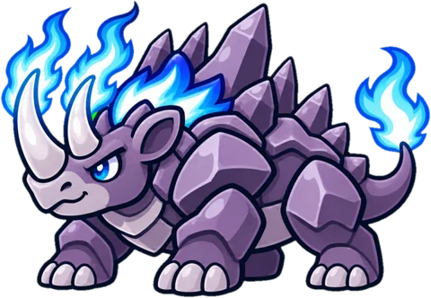
Magmling / Magmhorn / Infernaceros
קרנף אובסידיאן שחור עם קרן אחת וסדקי לבה כתומים


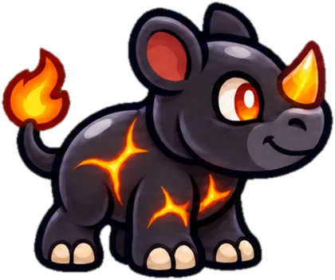


Clawling / Clawling II / Clawling III
עצלן עלים: גור טחוב עם טפרי עלים, ואז ענק עץ
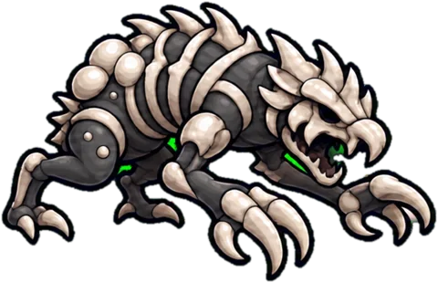


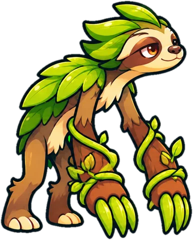
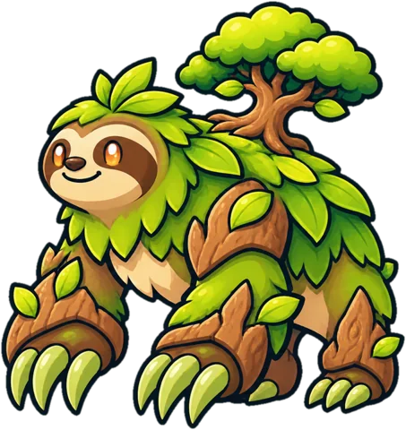
Cetaby / Cetarise / Cetamystic
דולפין פנינה שמשתנה דרמטית: גור עגול, לווייתן צדף, אורקל עם הילה


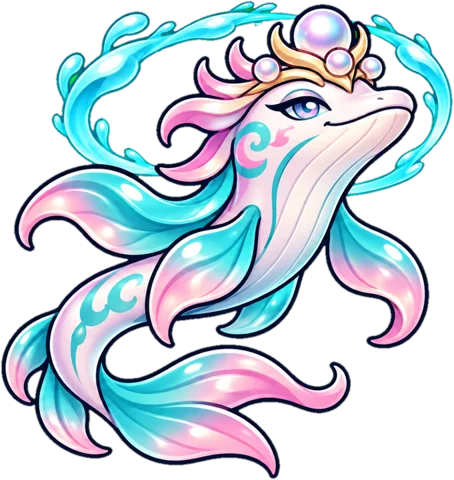
Rhomling / Rhinoam / Rhinotitan
קרנף שברי אבן שמקבל שריון גבישים עצום ויציבה זקופה
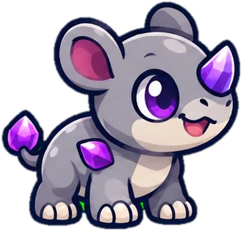


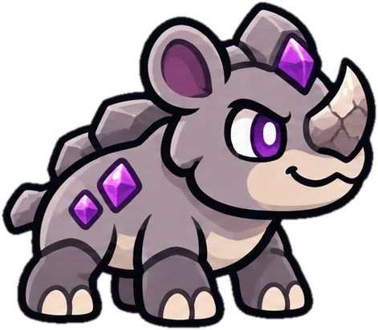
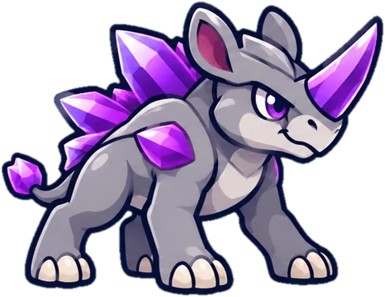
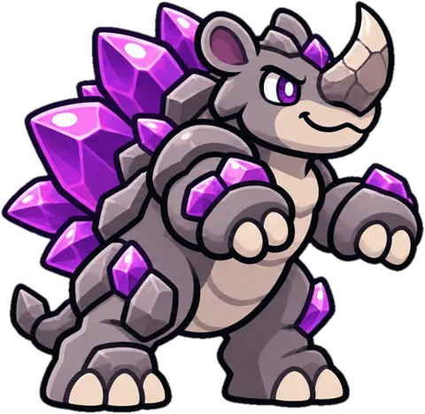
Frostblob / Glacierm / Crystallord
טיפת קרח שהופכת לדמות קרח קטנה עם כנפי גביש ואז למלך קרח זקוף


Stellite / Stellox / Stellaryx
חילזון גביש: עגול, ואז ספירלה גבוהה, ואז כתר קוצים
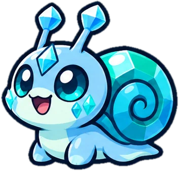

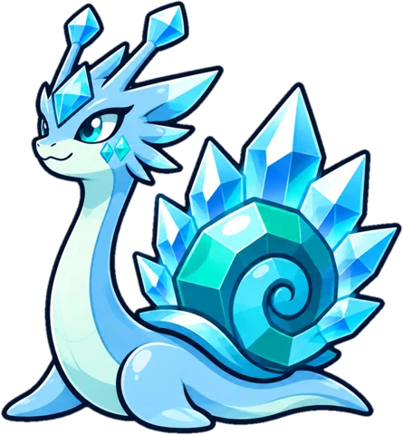
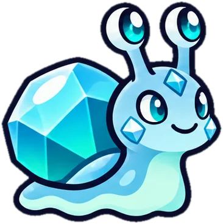
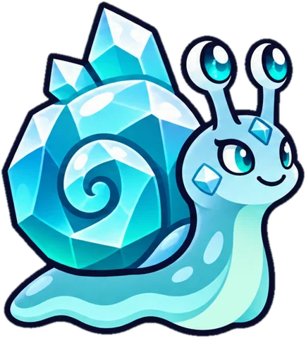
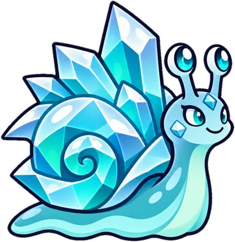
Amethule / Amethump / Amethyrax
קרפדה שחורה-אובסידיאן עם גבישי אמטיסט על הגב
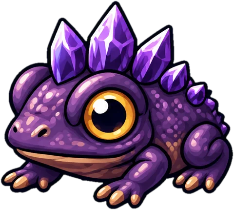


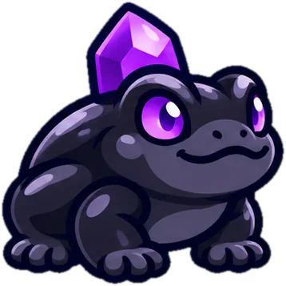
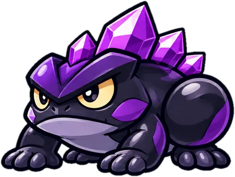
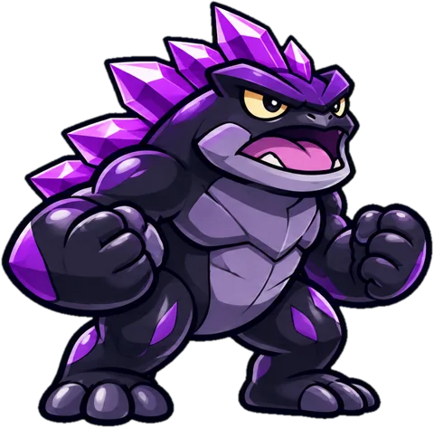
Burvil / Burvox / Burvexor
קרפדת ארס כתומה-ענבר עם יבלות


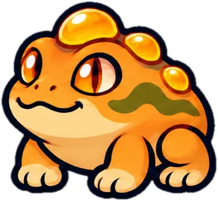
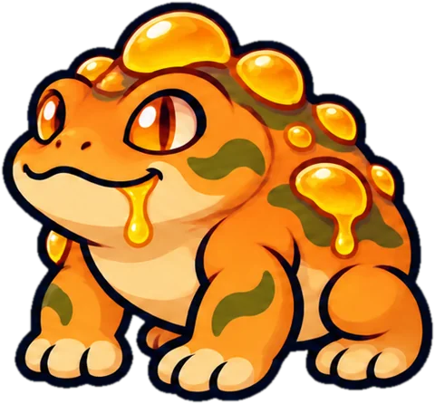
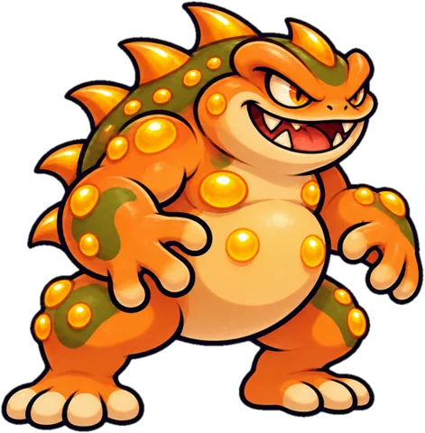
Sporoling / Bulbwart / Mycodrak
קרפדה ירוקה-טורקיז עם גבעולי עיניים כמו פריסקופ ופטריות


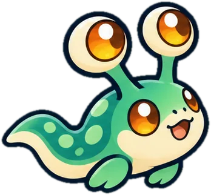
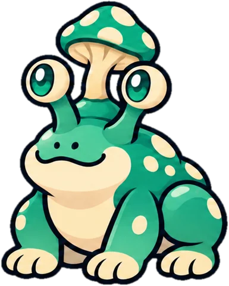
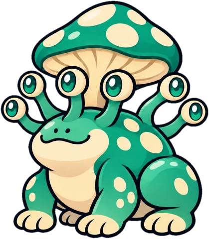
Luxling / Luxdrake / Luxwyrm
דרקון אור מזרחי-נחשי ארוך עם פיך בפרווה זהובה (שונה מדרקון האש)


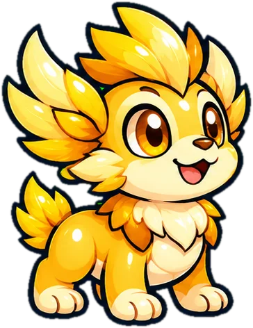

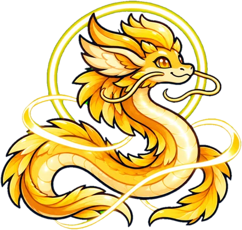
Tuskling / Tuskarok / Tuskolith
שלב 3 מחדש: ענק סלע זקוף על שתי רגליים עם כתר גבישים (שלבים 1 ו-2 נשארים)

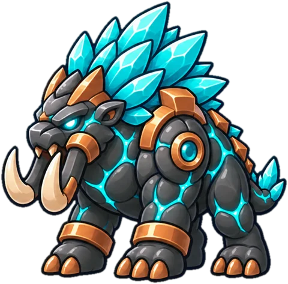

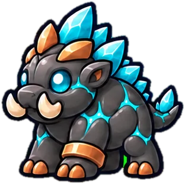
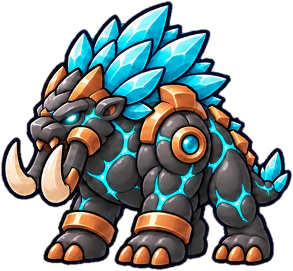
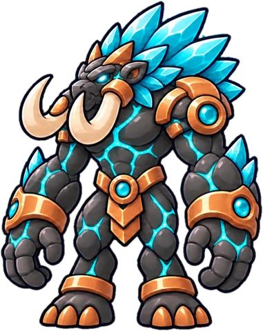